Construction d'un module amplificateur CO2 TEA émettant des pulses 100 mégawatts.
Cette version permet de tirer au vide l'enceinte laser avant de faire entrer le mélange gazeux He:N2:CO2
Il est prévu dans un premier temps de faire fonctionner le laser à énergie réduite avec seulement du CO2 sans hélium et azote. Pour cela il est nécessaire de limité l'énergie de pompage à 1/10 de l'énergie pompe que l'on utilise avec le mélange He:N2:CO2.
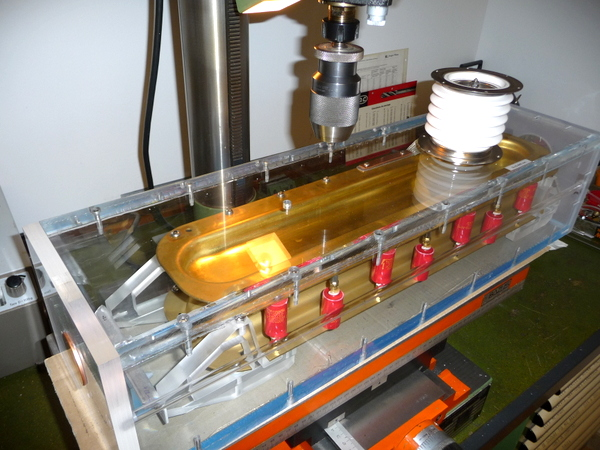
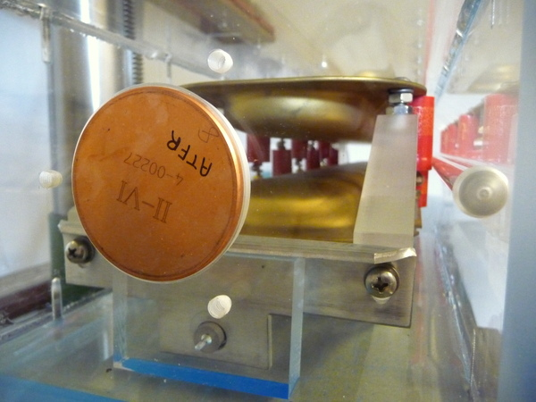
Obtenir une excitation uniforme du gaz à une pression élevée n'est pas facile à obtenir ! Quand
la pression du gaz est augmentée par rapport à une décharge (glow) à
basse pression , la caractéristique de la décharge change et vers une
pression de 50 torr le régime (glow) se transforme en arc et les arcs ne
sont pas souhaitables lors du pompage du gaz laser. En augmentant la pression l'avantage
majeur est l'élargissement des raies d'émission et la génération de
pulses de courtes durées (ns et ps).
Une plus grande énergie de sortie, un bon rendement, des coûts de fonctionnement et de construction plus faible.
Le premier laser CO2 TEA travaillant à pression atmosphérique(760 torr) à été obtenu par BEAULIEU en juin 1970.
Différents systèmes de pré-ionisation ont étés mis au point pour obtenir des décharges homogènes à pression atmosphérique avec des électrons, du rayonnement UV et XUV.
La pré-ionisation se réfère à la présence de particules chargées à l'intérieur du gaz à exciter avant la décharge principale qui va créer l'excitation moléculaire permettant d'obtenir une inversion de population.
Les lasers à gaz moléculaires à excitation transversale à pression atmosphérique (TEA) sont obtenu dans plus de 30 gaz différents permettant d'obtenir plus de 500 longueurs d'ondes différentes qui vont de 0.11 micron à 337 micron. Le laser travaillant à la plus haute pression (50 bar) est le laser ELION de N.G BASOV.
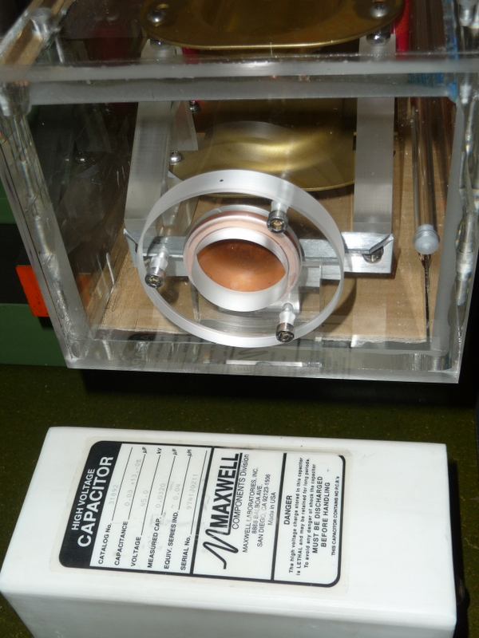
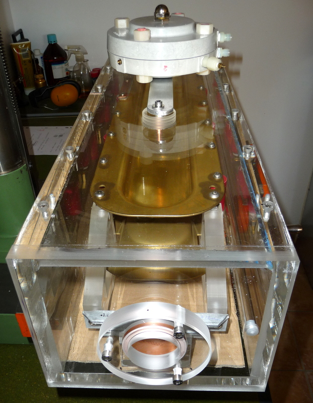
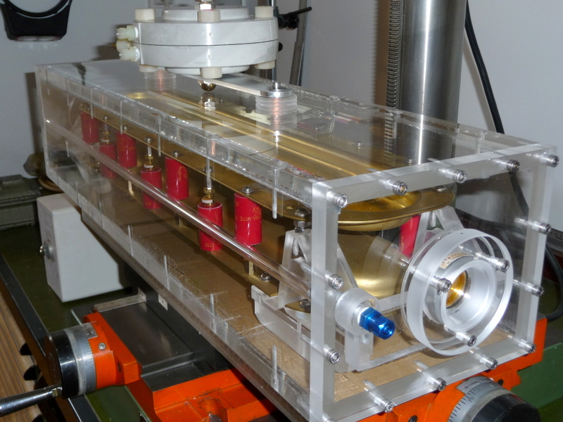
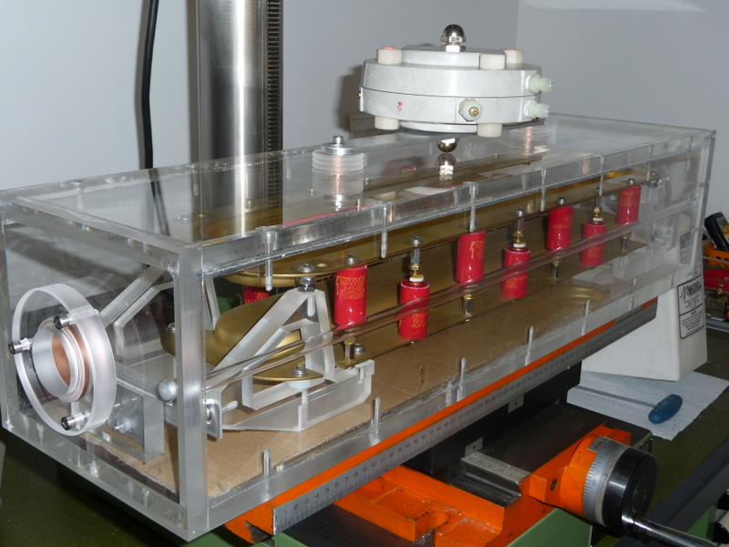
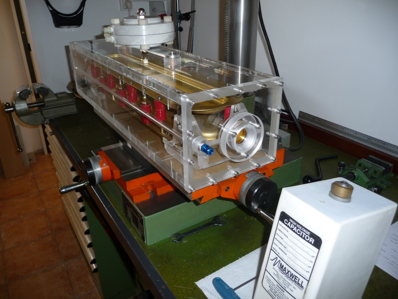
L'éclateur utilisé dans ce montage se compose de 2 électrodes sphériques (x et y) et d'une électrode centrale (disque plan ) muni d'un orifice central permettant de créer une perturbation local lors de l'impulsion trigger. Il permet également par l'action du rayonnement UV de ionisé plus facilement le canal et en même temps il diminue l'énergie de la décharge pouvant frappé cette électrode centrale ce qui diminue sont érosion.
La tension trigger doit être comprise entre 70 et 100% de la tension de décharge avec un front de montée d'au moins 2kV / ns.
Les résistances de 100 MOhm permettent de répartir le gradient de potentiel de l'électrode central par rapport aux électrodes de décharge x et y.
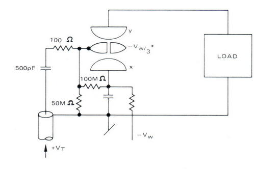
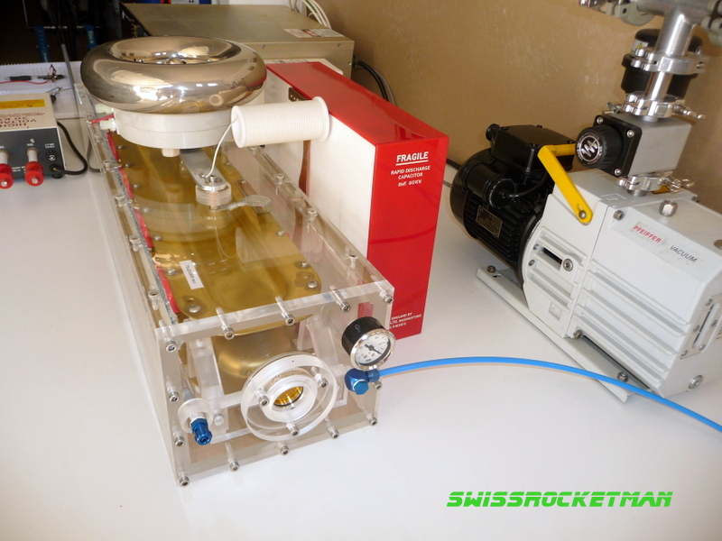
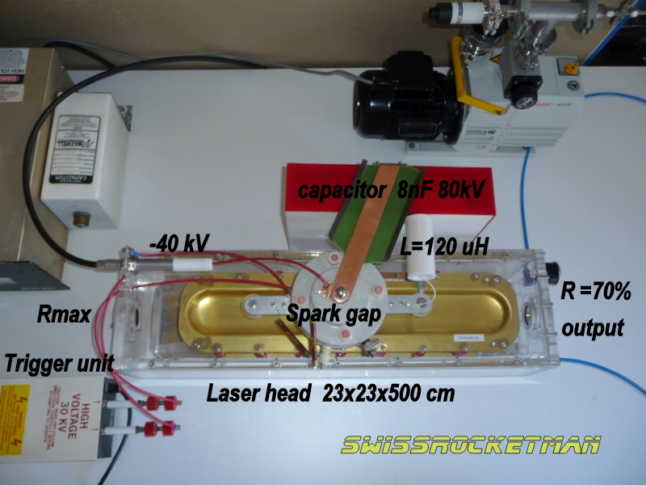
Dans ce premier montage le but visé était de vérifier la préionisation par arc de reptation à la surface de 14 plaquettes en céramique chacune couplée à un condensateur de 180pF 40kV. La capacité HIPOTRONICS de 8nF 80kV et 2nH d'inductance permettait une décharge de 25ns ! A 30kV l'énergie injectée étant de 14.4J/L donc très faible mais adaptée pour le pompage du CO2 pur. Dans c'est essai la pré ionisation à correctement fonctionner par contre je n'ai pas eu de décharge principal car 30% de la tension de décharge était nécessaire pour alimenter les 14 condensateurs de pré-ionisation.
La seconde étape est de remplacer ce condensateur par un condensateur MAXWELL de 32nF 50kV et de remplir avec un mélange de 2N2:1CO2 .
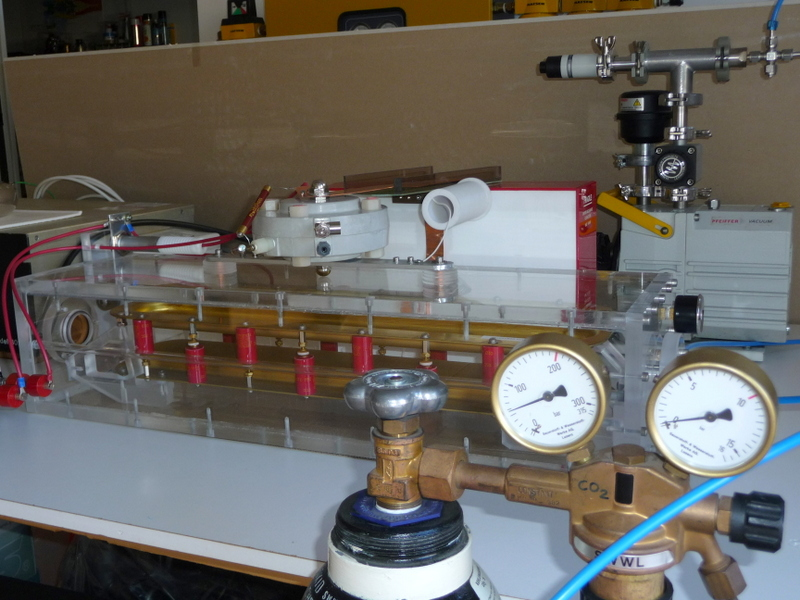
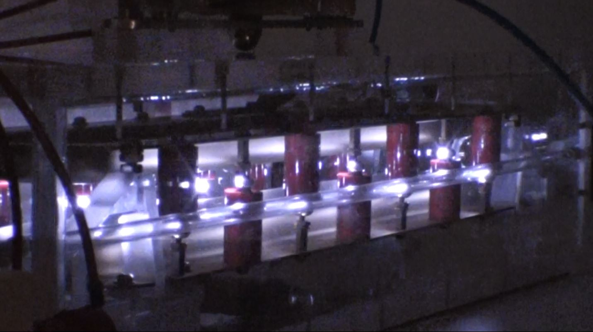
VIDEO en HD
VIDEO en HD
Changement du condensateur de 8nF 80kV par un condensateur MAXWELL 32nF
50kV 20nH d'inductance et par un mélange He:N2:CO2 d'environ 1:1:1
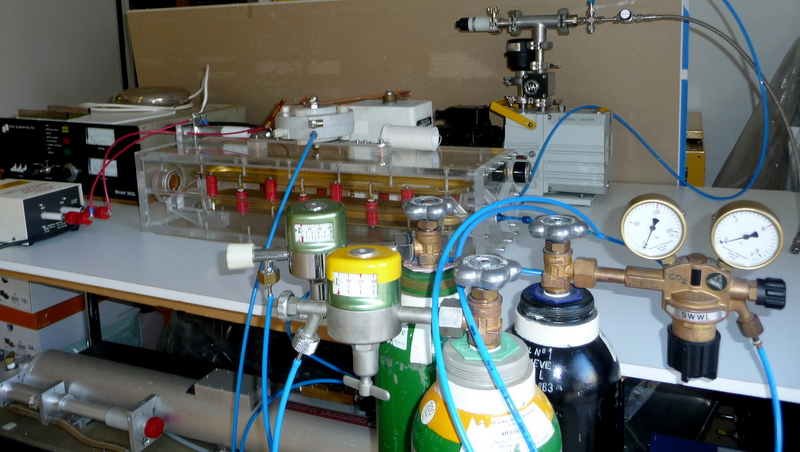
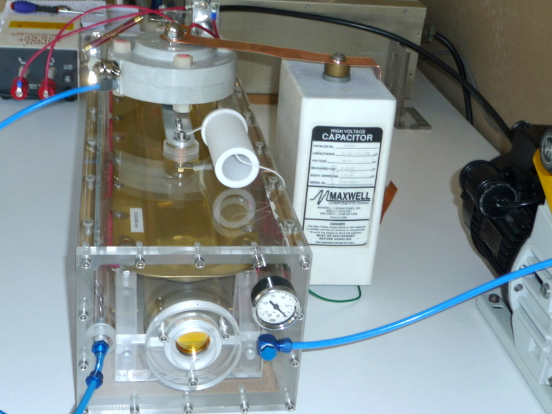
Actuellement les premières décharges se sont produites sous forme d'arcs donc pas bon pour le pompage du laser. Les principales modifications vont êtres:
le changement de l'alimentation de charge par une alimentation DC de 50 kV avec une résistance de charge ce qui va éviter la mise en arc continue.
L'utilisation d'une bouteille de mélange 5He:3N2:2CO2
Diminution de la pression de travail à 600 torr dans une première phase et si la décharge est homogène alors augmentation de la pression à 760 torr.
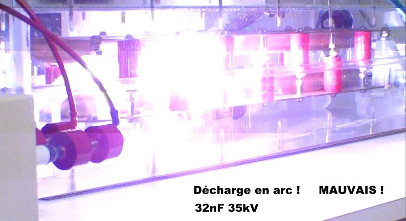
Video en HD Documentation sur divers lasers CO2 TEA